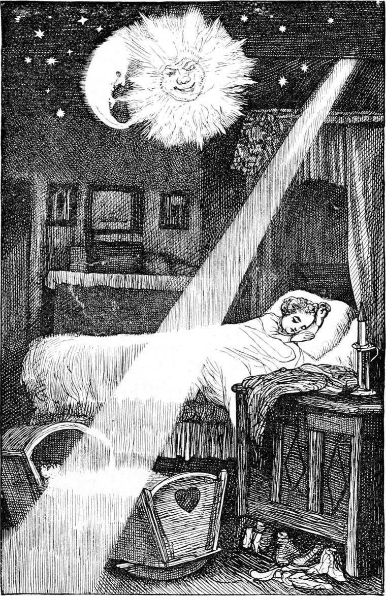

CHAPTER II
I cannot tell any better than most of my readers how and when I began to come awake, or what it was that wakened me. I mean, I cannot remember when I began to remember, or what first got set down in my memory as worth remembering. Sometimes I fancy it must have been a tremendous flood that first made me wonder, and so made me begin to remember. At all events, I do remember one flood that seems about as far off as anything—the rain pouring so thick that I put out my hand in front of me to try whether I could see it through the veil of the falling water. The river, which in general was to be seen only in glimpses from the house—for it ran at the bottom of a hollow—was outspread like a sea in front, and stretched away far on either hand. It was a little stream, but it fills so much of my memory with its regular recurrence of autumnal floods, that I can have no confidence that one of these is in reality the oldest thing I remember. Indeed, I have a suspicion that my oldest memories are of dreams,—where or when dreamed, the good One who made me only knows. They are very vague to me now, but were almost all made up of bright things. One only I can recall, and it I will relate, or more properly describe, for there was hardly anything done in it. I dreamed it often. It was of the room I slept in, only it was narrower in the dream, and loftier, and the window was gone. But the ceiling was a ceiling indeed; for the sun, moon, and stars lived there. The sun was not a scientific sun at all, but one such as you see in penny picture-books—a round, jolly, jocund man’s face, with flashes of yellow frilling it all about, just what a grand sunflower would look if you set a countenance where the black seeds are. And the moon was just such a one as you may see the cow jumping over in the pictured nursery rhyme. She was a crescent, of course, that she might have a face drawn in the hollow, and turned towards the sun, who seemed to be her husband. He looked merrily at her, and she looked trustfully at him, and I knew that they got on very well together. The stars were their children, of course, and they seemed to run about the ceiling just as they pleased; but the sun and the moon had regular motions—rose and set at the proper times, for they were steady old folks. I do not, however, remember ever seeing them rise or set; they were always up and near the centre before the dream dawned on me. It would always come in one way: I thought I awoke in the middle of the night, and lo! there was the room with the sun and the moon and the stars at their pranks and revels in the ceiling—Mr. Sun nodding and smiling across the intervening space to Mrs. Moon, and she nodding back to him with a knowing look, and the corners of her mouth drawn down.

I have vague memories of having heard them talk. At times I feel as if I could yet recall something of what they said, but it vanishes the moment I try to catch it. It was very queer talk, indeed—about me, I fancied—but a thread of strong sense ran through it all. When the dream had been very vivid, I would sometimes think of it in the middle of the next day, and look up to the sun, saying to myself: He’s up there now, busy enough. I wonder what he is seeing to talk to his wife about when he comes down at night? I think it sometimes made me a little more careful of my conduct. When the sun set, I thought he was going in the back way; and when the moon rose, I thought she was going out for a little stroll until I should go to sleep, when they might come and talk about me again. It was odd that, although I never fancied it of the sun, I thought I could make the moon follow me as I pleased. I remember once my eldest brother giving me great offence by bursting into laughter, when I offered, in all seriousness, to bring her to the other side of the house where they wanted light to go on with something they were about. But I must return to my dream; for the most remarkable thing in it I have not yet told you. In one corner of the ceiling there was a hole, and through that hole came down a ladder of sun-rays—very bright and lovely. Where it came from I never thought, but of course it could not come from the sun, because there he was, with his bright coat off, playing the father of his family in the most homely Old-English-gentleman fashion possible. That it was a ladder of rays there could, however, be no doubt: if only I could climb upon it! I often tried, but fast as I lifted my feet to climb, down they came again upon the boards of the floor. At length I did succeed, but this time the dream had a setting.
I have said that we were four boys; but at this time we were five—there was a little baby. He was very ill, however, and I knew he was not expected to live. I remember looking out of my bed one night and seeing my mother bending over him in her lap;—it is one of the few things in which I do remember my mother. I fell asleep, but by and by woke and looked out again. No one was there. Not only were mother and baby gone, but the cradle was gone too. I knew that my little brother was dead. I did not cry: I was too young and ignorant to cry about it. I went to sleep again, and seemed to wake once more; but it was into my dream this time. There were the sun and the moon and the stars. But the sun and the moon had got close together and were talking very earnestly, and all the stars had gathered round them. I could not hear a word they said, but I concluded that they were talking about my little brother. “I suppose I ought to be sorry,” I said to myself; and I tried hard, but I could not feel sorry. Meantime I observed a curious motion in the heavenly host. They kept looking at me, and then at the corner where the ladder stood, and talking on, for I saw their lips moving very fast; and I thought by the motion of them that they were saying something about the ladder. I got out of bed and went to it. If I could only get up it! I would try once more. To my delight I found it would bear me. I climbed and climbed, and the sun and the moon and the stars looked more and more pleased as I got up nearer to them, till at last the sun’s face was in a broad smile. But they did not move from their places, and my head rose above them, and got out at the hole where the ladder came in. What I saw there, I cannot tell. I only know that a wind such as had never blown upon me in my waking hours, blew upon me now. I did not care much for kisses then, for I had not learned how good they are; but somehow I fancied afterwards that the wind was made of my baby brother’s kisses, and I began to love the little man who had lived only long enough to be our brother and get up above the sun and the moon and the stars by the ladder of sun-rays. But this, I say, I thought afterwards. Now all that I can remember of my dream is that I began to weep for very delight of something I have forgotten, and that I fell down the ladder into the room again and awoke, as one always does with a fall in a dream. Sun, moon, and stars were gone; the ladder of light had vanished; and I lay sobbing on my pillow.
I have taken up a great deal of room with this story of a dream, but it clung to me, and would often return. And then the time of life to which this chapter refers is all so like one, that a dream comes in well enough in it. There is a twilight of the mind, when all things are strange, and when the memory is only beginning to know that it has got a notebook, and must put things down in it.
It was not long after this before my mother died, and I was sorrier for my father than for myself—he looked so sad. I have said that as far back as I can remember, she was an invalid. Hence she was unable to be much with us. She is very beautiful in my memory, but during the last months of her life we seldom saw her, and the desire to keep the house quiet for her sake must have been the beginning of that freedom which we enjoyed during the whole of our boyhood. So we were out every day and all day long, finding our meals when we pleased, and that, as I shall explain, without going home for them. I remember her death clearly, but I will not dwell upon that. It is too sad to write much about, though she was happy, and the least troubled of us all. Her sole concern was at leaving her husband and children. But the will of God was a better thing to her than to live with them. My sorrow at least was soon over, for God makes children so that grief cannot cleave to them. They must not begin life with a burden of loss. He knows it is only for a time. When I see my mother again, she will not reproach me that my tears were so soon dried. “Little one,” I think I hear her saying, “how could you go on crying for your poor mother when God was mothering you all the time, and breathing life into you, and making the world a blessed place for you? You will tell me all about it some day.” Yes, and we shall tell our mothers—shall we not?—how sorry we are that we ever gave them any trouble. Sometimes we were very naughty, and sometimes we did not know better. My mother was very good, but I cannot remember a single one of the many kisses she must have given me. I remember her holding my head to her bosom when she was dying—that is all.